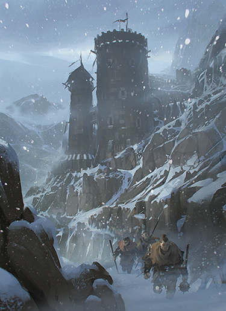

Antisèches
Avant chaque session de la campagne D&D que je mène en ce moment, j’aime me faire une petite antisèche qui m’aide à faire aller de l’avant la session. Si bien cette antisèche souligne les aspects principaux de l’aventure que je mène (le donjon que les joueurs explorent, la réunion du conseil municipal qu’ils interrompent, et ainsi de suite), son utilité principale est de m’aider à maintenir le rythme de l’aventure. Cette antisèche possède quatre parties principales. Je travaille dessus dans l’ordre suivant durant mon temps de préparation, bien que je les dispose dans l’ordre inverse sur ma version définitive.
L’aventure principale
Cette section contient les éléments qui devraient selon moi être au cœur de la session à venir. Ça peut n’être qu’une portion d’une aventure plus large ; par exemple, mon antisèche pourrait n’avoir qu’un niveau d’un donjon qui en comprend plusieurs, parce que je n’anticipe pas que les joueurs poussent plus loin durant cette session. Cette section contient ce que vous trouverez dans une aventure publiée : cartes, descriptions de salles, caractéristiques des monstres, notes sur les trésors et les points d’expérience, etc. Rien de nouveau si vous avez déjà été MD.
Interludes
Voici les éléments les plus cruciaux pour maintenir le rythme d’une session. Cette section inclut de six à dix « interludes » : des mises en place pour des scènes courtes, généralement pas plus d’un court paragraphe de texte. Les interludes me donnent quelque chose à lancer à mes joueurs quand je sens que la partie commence à patiner. Ils secouent les choses, ou m’aident juste à ramener les joueurs dans le monde du jeu.
Généralement, un interlude consiste en un simple résumé qui sonne comme la description d’une scène de film : « Le mercenaire du groupe demande à devenir l’écuyer du paladin », « Une bande de cavaliers en armure noire fait irruption sur la place de la ville, mettant les civils en danger », ou « Une nuée de rats squelettes se fraie un chemin dans le couloir, ignorant les héros ». Cela crée une situation intéressante, qui ne prendra sans doute pas plus de dix à quinze minutes à résoudre, avant de revenir à l’histoire principale.
Les interludes sont de superbes flèches narratives pour remplir le carquois du rythme de ma session, mais elles servent aussi un autre but clé : donner chair à l’univers, à la campagne, de façons pas nécessairement liées à l’aventure centrale. A cette fin, j’identifie quatre types principaux de scènes, et avant chaque session je m’efforce d’avoir au moins deux interludes de chaque type préparés. Quand je sens un temps mort, je prends l’interlude qui selon moi va rendre le jeu le plus intéressant à ce stade. A la fin de la session, je peux récupérer ceux qui restent (je ne les utilise pratiquement jamais tous) pour ma prochaine antisèche.
Arc narratif des personnages
Ces scènes illustrent ou développent un aspect des histoires personnelles des Personnages Joueurs (PJ). Généralement, elles surgissent des liens du personnage avec le monde, ou d’événements ou d’interactions précédents. Elles s’adressent personnellement à un seul personnage (voire à un duo de personnages), mais ne sont généralement pas liées à l’histoire en cours de la campagne. Exemples :
- Un PJ reçoit une lettre d’un parent mourant.
- Le groupe croise la route de réfugiés de la ville natale d’un des PJ.
- Un PJ surprend une rumeur sur l’endroit où se trouve son ennemi juré.
Arc narratif de la campagne
Ces interludes sont liés à l’histoire principale de la campagne, mais n’ont pas d’impact direct sur l’aventure en cours. Ils renforcent habituellement les thèmes principaux de la campagne. Exemples :
- Le groupe tombe sur les restes d’une bataille entre deux armées, sans aucun survivant.
- Le groupe est appelé à assister à la pendaison d’un membre de la guilde des voleurs.
- Un PJ reçoit la visite d’un noble local qui tente de le subordonner à sa Maison.
Texture du monde
Ces sortes de scènes renforcent les thèmes primaires de l’univers de la campagne : l’abondance de la technologie magique dans Eberron, la rudesse des déserts de Dark Sun, ou les dangers réalistes de ma version de Greyhawk. Ces scènes sont aussi parfaites pour mettre en valeur des éléments particulièrement intéressants du folklore de l’univers. Exemples :
- Le groupe est abordé par un vendeur ambulant déclarant vendre de nombreuses potions magiques soignant tout, pour un prix très, très bas (Eberron).
- Le groupe croise la route des restes d’une caravane qui transporte encore les squelettes de gens n’ayant pas survécus au voyage (Dark Sun).
- Le groupe est témoin dans la rue d’un duel entre un paladin de Pholtus et un clerc de St Cuthbert (Greyhawk).
Texture des PNJ
Ces interludes donnent des histoires et de la profondeur aux PNJ avec lesquels le groupe interagit régulièrement. La plupart du temps, ce sont de courtes scènes sans grandes conséquences, comme des conversations autour du feu de camp. D’autres fois – surtout quand un PNJ est important pour l’intrigue en cours – de telles scènes peuvent ramener les personnages au conflit central. Exemples :
- Le bienfaiteur du groupe invite les PJ à dîner.
- Un PJ croise la route d’un aventurier rival dans une taverne. Une conversation polie, mais tendue, s'engage.
- Un PJ aperçoit un mercenaire du groupe regarder un portrait au fusain d’une autre personne : être aimé, membre de sa famille décédé, ennemi, etc.
Rencontres aléatoires
Une section de la feuille de préparation que je réutilise d’une section à l’autre est la table des rencontres aléatoires. Je construis généralement mes propres tables basées sur l’environnement où l’aventure devrait se dérouler. Comme recommandé dans le Dungeon Master's Guide, je peuple ces tables d’un mélange de monstres, de combats potentiels, de défis posés par l’environnement, d’opportunités d’explorations, et d’interactions avec des PNJ amicaux (ou au moins neutres). La table des rencontres aléatoires emprunte beaucoup des méthodes que j’utilise pour les interludes, mais avec plus de défis et de potentiels pour le combat.
Récap
La toute dernière chose que je fais est de créer un récapitulatif. C’est une idée que j’ai piqué sans scrupules à Chris Perkins, qui lui-même l’a pris aux séries télé. C’est ce que j’utilise pour rappeler aux joueurs ce qui est arrivé dans les sessions précédentes et les préparer pour cette session. Je fais cette partie en dernier parce que, avec le reste de mon travail de préparation terminé, je sais maintenant quels événements précédents de la campagne risquent de rentrer en jeu via les interludes. Je ne me contente pas de résumer ce qu’il s’est passé la fois précédente ; parfois, les choses que je décris dans le récap sont arrivées plusieurs mois avant. Par exemple, si un méchant récurent risque d’apparaître (ou qu’on y fasse référence) dans un interlude, j’ajouterai dans le récapitulatif une description de la dernière rencontre des joueurs avec ce méchant.
En termes de structure, mon récap commence avec la même phrase d’ouverture chaque semaine (« Précédemment, dans la campagne Tyrannie des Dragons… »). Cela indique à mes joueurs que je suis prêt à démarrer la session. S’en suivent trois courts paragraphes qui fournissent aux joueurs assez d’informations pour leur rappeler ce qui est déjà arrivé dans le jeu, sans voir leurs regards devenirs vitreux à cause d’une interminable récitation de pré-session.
Une fois le récap fait, place à une aventure palpitante ! Avec votre antisèche en main, vous devriez être paré pour tout ce qui pourrait arriver.
Écrit par Rodney Thompson, traduit par Bonjovitch